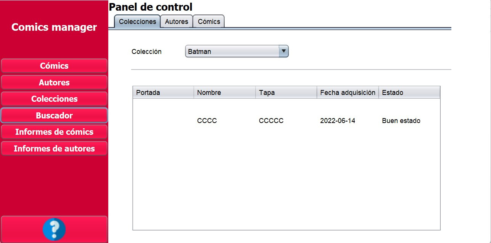

Buscador

El panel de búsqueda permite al usuario hacer diferentes consultas parametrizadas sobre la base de datos:
- Colecciones:: A través de ese panel es posible visualizar los diferentes cómics pertenecientes
a una colección. En una tabla se muestran los detalles de los cómics pertenecientes a la colección seleccionada.
- Autores: Mediante la utilización de este panel es posible visualizar
los cómics de un autor seleccionado a través de una tabla que muestra sus detalles.
- Cómics: Mediante la utilización de este buscador es posible encontrar cómics por nombre, mostrando sus detalles en una tabla de muestra.